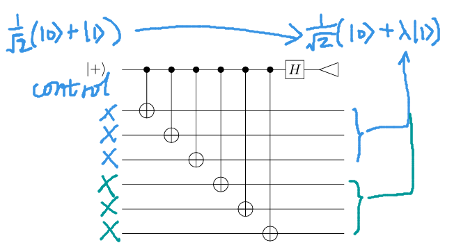
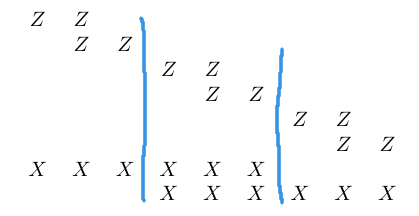
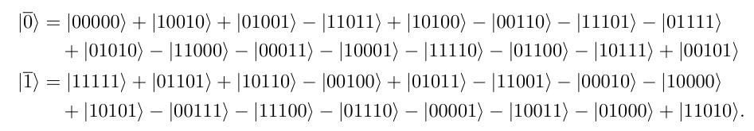
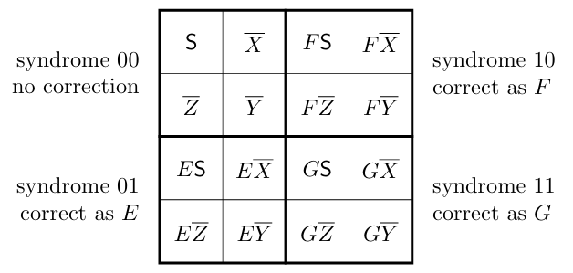
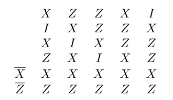
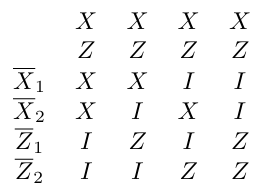
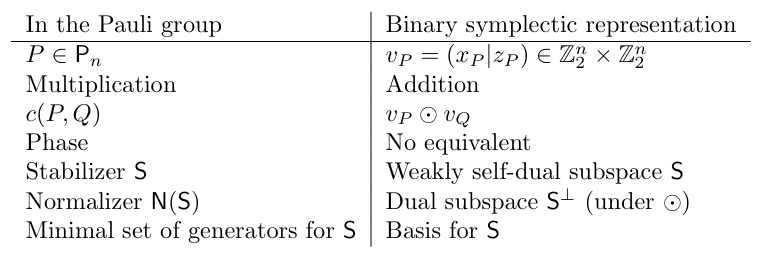
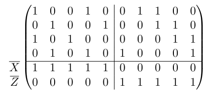

QECC讨论班：Stabilizer Codes
教材：《Surviving as a Quantum Computer in a Classical World》Daniel Gottesman 第三章
pdf下载： https://pan.baidu.com/s/1AVoIezjcrJfcwfovxBQ0bQ?pwd=3316 提取码: 3316
这一张主要围绕对称群构造了另一种纠错方式，叫stabilizer codes
9-Qubit
$$\begin{aligned} |0\rangle \mapsto |\overline{0}\rangle &= \frac{1}{2\sqrt{2}}(|000\rangle + |111\rangle)(|000\rangle + |111\rangle)(|000\rangle + |111\rangle) \\ |1\rangle \mapsto |\overline{1}\rangle &= \frac{1}{2\sqrt{2}}(|000\rangle - |111\rangle)(|000\rangle - |111\rangle)(|000\rangle - |111\rangle). \end{aligned}$$
9-Qubit可以解决比特翻转错误和相位翻转错误同时发生的问题，首先在3qubit中找出是否发生比特翻转错误，然后我们将这组3qubit在另外两组3qubit中对比以查看是否有相位翻转错误($\ket{0}+\ket{1}$与$\ket{0}-\ket{1}$)
比特翻转
用Z矩阵(diag(1,-1))去测量
在第一步检查比特翻转时，我们先检查前两个qubit是否一致，再检查后两个qubit是否一致，这一步可以视作在两个qubit上测量$Z\otimes Z$的特征值
$$Z \otimes Z = \begin{pmatrix} +1 & 0 & 0 & 0 \\ 0 & -1 & 0 & 0 \\ 0 & 0 & -1 & 0 \\ 0 & 0 & 0 & +1 \end{pmatrix} \begin{matrix} 00 \text{ (even)} \\ 01 \text{ (odd)} \\ 10 \text{ (odd)} \\ 11 \text{ (even)} \end{matrix}$$
+1意味着偶宇称(parity)，-1意味着奇宇称，在三个qubit上我们总共测量的是$Z\otimes Z\otimes I$和$Z\otimes I\otimes Z$
相位翻转
用X矩阵(0 1; 1 0)测量，这个矩阵可以翻转0与1
作用在3qubit的情况时也差不多
$$X\otimes X\otimes X |\psi_{\pm}\rangle = \frac{1}{\sqrt{2}}(|111\rangle \pm |000\rangle) = \pm \frac{1}{\sqrt{2}}(|000\rangle \pm |111\rangle)$$
每组使用三个X，如果需要判断两组相位是否相同，我们总共要用到6个X。我们的目标是了解相位是相同还是不同，而不需要知道每个相位的具体值。

这种测量方式是无容错的（non-fault-tolerant）
上面介绍了用Z算符去测比特翻转错误以及用X去测相位翻转错误，把这些合写在一起得到生成表

空格代表不做操作，也即I单位算符。第一行代表着仅对前两个bit做Z操作，可以测出前两个比特是否一致；如果需要比对第一和第三个qubit，仅需将第一行和第二行组合起来操作
我们把为了测量9-qubit错误信息而使用的这些算符称作stabilizer of nine-qubit code（稳定子之类的），那么上表就是stabilizer的生成元
不同的error syndrome对应着不同stabilizer生成元集合
泡利群
定义：泡利群$P_n$是由I，X，Y，Z在n qubit上张量积组成的群，并带有overall相位$\pm1$或$\pm i$
在下文中被简称为泡利算符、泡利错误或泡利
我们可以很容易的验证泡利群的封闭性，因为X，Y，Z中任意两个的乘积等于第三个乘$\pm i$的整体因子，任何泡利算符的平方都等于I（如果带有$\pm i$相位那么平方是-I），而且不同泡利矩阵之间是反对易的
在单比特情况下，只有平凡情况（含I或两个相同算符）是对易的；在多比特情况下会有非平凡的对易比如$X\otimes X$与$Z\otimes Z$
使用$[P,Q]=PQ-QP$代表对易子，$\{P,Q\}=PQ+QP$代表反对易子（跟量子力学一样的记法）
$P_n$有$4^{n+1}$个元素，因为存在每个比特位上可以从IXYZ这四个算符中挑选一个，最后还能带上4种相位
如果忽略相位的话只有$4^n$种，并记作$\hat{P}_n\simeq P_n/\{\pm I,\pm iI\}$
定义：设$P\in P_n$，则$\hat{P}\in\hat{P}_n$是$\hat{P}_n$中对应元素。子集$S\in P_n$也有相对应的子集$\hat{S}\in\hat{P}_n$
作者说带不带帽子影响的只是细微技术细节，并且建议读者在感到困惑之前忽略帽子的区别
所有泡利矩阵都有$\pm 1$的特征值，并且特征子空间恰好是全希尔伯特空间的一半，也就是说+1和-1都具有维度$2^{n-1}$的特征子空间。
$P_n$张成了所有 n-qubit算符的空间，权重为t的泡利算符（非I算符的数量为t）张成了t-qubit错误的集合。如第二章所说，要拥有一个能纠正 t 个错误的量子纠错码（QECC），只需纠正所有权重为 t 的保利算符即可。
Stabilizer Codes
给定一个通用的QECC，我们可以像定义9-qubit码一样定义它的stabilizer
定义：给定一个QECC $T\subset\mathcal{H}_{2^n}$，其stabilizer S(T)为
$$S(T)=\{M\in P_n:M\ket{\psi}=\psi,\forall\ket{\psi}\in T\}$$
也就是说S(T)是使得T中所有codewords均不变或特征值为+1的泡利算符组成的的集合
（也可以定义所有使得codewords保持不变的酉算符，但是事实上注意泡利算符是更有效的）
非空QECC T对应的stabilizer有下面几个性质
- $-I\notin S(T)$
- S(T)是一个阿贝尔群
只证第二条，由于$MN\ket{\psi}=NM\ket{\psi}$，所以$[M,N]$湮灭codewords。$P_n$中的元素要么对易要么反对易，反对易的情况是无法湮灭codewords的所以只可能是对易的情况，也即S(T)是阿贝尔群
拓展：在线性空间V下有厄米矩阵A、B，则AB可交换 等价于 A、B拥有同一套特征向量
证明请看[^1]
泡利矩阵当然是厄米的，并且在这里特征向量相同，所以可以推出可交换性
反过来的，我们也可以根据算符找不变子空间的形式去定义code space
定义：令$S\subset P_n$是阿贝尔群，并且-I不在群中，如下定义S对应的code space：
$$\mathcal{T}(S)=\{\ket{\psi}:M\ket{\psi}=\psi,\forall M\in S\}$$
那么很自然的有$T\subset\mathcal{T}(S(T))$，当他们相等时，code有特殊性质（感觉有点像那种前对偶空间啥的）
注：这里暂时没找到不相等的情况，ai又说一定是相等的
定义：如果QECC T满足$T=\mathcal{T}(S(T))$，那么称它为stabilizer codes
也被称作symplectic codes, additive codes（加性码）或GF(4) additive codes
Stabilizer code可以只根据stabilizer来定义，这是因为有这样的命题：
命题：$S=S(\mathcal{T}(S))$
由于证明工具不足，留到之后在证明
接下来给稳定器取生成元集，就像之前对9比特码做的一样。在最小生成元集中任何生成元不能由其它的生成元乘积得到。由于群是阿贝尔的所以乘法的顺序不重要。由于-I不在群内所以所有元素的平方必须为I，并且任何大于1的幂都可以被约化。
综合以上几点我们可以将稳定器中任何元素都写作
$$M_{i_1,...,i_r}=\prod_j M_j^{i_j}$$
其中$i_j$取0或1，这意味着稳定器的大小为$2^r$
由stabilizer code定义code space时，当然可以用+1特征空间来定义，也可以用-1特征空间来定义，只需将$M_i$替换成$-M_i$即可，它仍在$P_n$内
5-Qubit
这是5qubit的stabilizer生成元
$$\begin{matrix} X & Z & Z & X & I \\ I & X & Z & Z & X \\ X & I & X & Z & Z \\ Z & X & I & X & Z \end{matrix}$$
可以看出他是循环对称的，并且最后一个循环的结果ZZXIX不在表中但他仍然是个stabilizer，因为它可以通过上述四个生成元相乘得到。事实上这四个生成元可以从五种循环样式中任选四个来得到
我们知道code words是stabilizer的不变子空间，现在希望找到这个子空间所对应的投影算符
生成元$M_i$的+1本征空间投影算符是$(I+M_i)/2$，所以当有r个生成元时，S的投影算符为
$$\Pi_{\mathsf{S}} = \frac{1}{2^r} \prod_{i=1}^r (I + M_i)$$
这个式子把乘积写开之后有种母函数的感觉，每一项都是生成元的积，也就是S中的元素M（总共16个）
$$\Pi_{\mathsf{S}} = \frac{1}{2^r} \sum_{M \in \mathsf{S}} M$$
使用投影算符，我们可以从任意的5-qubit出发来得到我们想要的code space中元素。例如，我们将投影算符作用在$\ket{00000}$和$\ket{11111}$之后得到了code space的两个正交基

这就是将16个S中的元素作用上去的结果
Stabilizer Code的距离与大小
虽然物理qubit的个数很容易看出，但是逻辑qubit（例如9qubit实际上承载着可纠错的单qubit信息，那么他的逻辑qubit就是1个）和距离d不太显然，但是可以从stabilizer中推出来
命题：如果n个物理比特上的stabilizer S大小为$2^r$(有r个生成元)，那么$\mathcal{T}(S)$有$2^{n-r}$个维度，也就是说有$k=n-r$个逻辑比特
[!info]
思路：n个物理比特总共有$2^n$个元素，每多增加一个生成元，我们只取其特征为+1的子空间，所以可选择的区域减少了一半，总共r个生成元就是对半了r次，所以最后剩下的维度是$2^{n-r}$
证明可能会稍微有些不同：
$\mathcal{T}(S)$的维度等于投影算符$\Pi_S$的迹
$$tr\Pi_S=\frac{1}{2^r}\sum_{M\in S}trM$$
然而除单位矩阵I以外，所有泡利矩阵均迹0，因此
$$tr\Pi_S=\frac{tr I}{2^r}=2^{n-r}$$
根据这个公式可以验证9qubit码-8stabilizer生成元得到1个编码比特；5qubit码-4生成元得到1编码比特
当nqubit上有n生成元时按理来说得到0个编码比特，也即在归一化意义下单一的量子态
定义：Stabilizer state是n个stabilizer生成元作用在n qubits上得到的态
有时stabilizer state可以是QECC构造的起点或终点。这个态在量子信息中也是很常见的，例如GHZ态$\ket{000}+\ket{111}$以及Bell态$\ket{00}\pm\ket{11},\ket{01}\pm\ket{10}$都是稳定器态
为了推导code的距离，回顾9qubit码是如何处理错误的。通过辅助比特和全套生成元的作用，我们最终能识别所有的单比特错误
一个生成元是否能检测到由E引发的错误关键在于**反对易性**：
$$M(E\ket{\psi})=-EM\ket{\psi}=-E\ket{\psi}$$
可以看出出错的码$E\ket{\psi}$位于-1所对应的特征子空间内，这便是出错的信号。反之如果M和E对易的话出错后的码仍然在+1对应的特征空间内，就没有识别能力了
使用泡利群的优势是只有上面两种选择，要么M与E对易要么反对易；要么维持+1特征值，要么变为-1特征值发出错误的信号
定义：Stabilizer S的正规化子N(S)定义为
$$N(S)=\{N\in P_N|NM=MN\quad\forall M\in S\}$$
这就是群论里与所有元素都对易的中心化子Z(S)的定义
注：正规化子的定义比中心化子定义要弱，正规化子说的是$\{x\in G:xS=Sx\}$，即不一定与每个元素交换，有可能等式左右取S中的不同元素，但是作为S整体保持不变即可
好在stabilizer性质很好，这两者是等价的。这里称他为正规化子是因为正规化子与逻辑操作相关
由于S本身就是阿贝尔群，所以N(S)包含S。此外，N(S)还包含$-S$与$\pm iS$。由于N(S)是关于错误的，所以全局相位不再重要（没懂）因此我们希望处理忽略相位后的$\hat{ N}(S)$
正规化子告诉我们那些错误可以被稳定器码检测到。对于正规化子内的元素，由于和stabilizer可交换所以无法检测到，那么正规化子外的错误会具有特征值-1从而能够被检测到。错误E的对易关系仅需检测与stabilizer生成元之间的对易关系即可
有一些错误虽然在正规化子之内，但是它满足$E\ket{\psi}=\ket{\psi}$所以他并不算是错误。忽略overall相位后的$\hat{E}\in\hat{S}$也不算错误
综上所述我们知道了stabilizer可检测错误的类型：
定理：Stabilizer S的不可检测错误集合为$\hat{\mathsf{N}}(\mathsf{S}) \setminus \hat{\mathsf{S}}$，S的距离d为$\min\{wt~E|\hat{E}\in\hat{N}(S)\setminus \hat{S}\}$
这里wt E指的是E的权重，也即非单位矩阵I的个数
证明：考虑关于E的三种情况，在第一二种情况中$\ket{\psi}$和$\ket{\phi}$是任意的codewords
- $\hat{E}\in\hat{S}$，那么合理选择相位可以使得$E\in S,E\ket{\phi}=\ket{\phi}$所以$\braket{\psi|E|\phi}=\braket{\psi|\phi}$，$c(E)=1$是可以被探测的
- $\hat{E}\notin\hat{N}(S)$，那么$\exists M\in S$使得M与E反对易，所以$\braket{\psi|E|\phi}=\braket{\psi|MEM|\phi}=-\braket{\psi|E|\phi}=0$，所以$c(E)=0$，可被探测
- $\hat{E}\in\hat{\mathsf{N}}(\mathsf{S}) \setminus \hat{\mathsf{S}}$，由于$E\notin S$，所以存在codeword$\ket{\phi}$使得$E\ket{\phi}\neq\ket{\phi}$
令$\ket{\psi}=E\ket{\phi}$，由于$E\in N(S)$，所以$\ket{\psi}$也是codeword，但是
$$\braket{\psi|E|\phi}=1=\frac{1}{\braket{\psi|\phi}}\braket{\psi|\phi}$$
$$\braket{\phi|E|\phi}=\braket{\phi|\psi}=(\braket{\phi|\psi})\braket{\phi|\phi}$$
可探测错误的定义：$\braket{\psi|E|\phi}=c(E)\braket{\psi|\phi}$对任意的$\ket{\psi},\ket{\phi}$均成立
所以除非$|\braket{\phi|\psi}|=1$，换言之E是在所有比特上平等的相位错误，要不然这种错误均非可探测的。但是如果在所有比特上平等产生相位错误那不就在$\hat{S}$中了吗，所以是不可能的。这里的E都无法探测
核心点在于，codeword中的态都无法被stabilizer检测出来，而$\hat{\mathsf{N}}(\mathsf{S}) \setminus \hat{\mathsf{S}}$中的错误恰好将某个codeword变为了另一个codeword，使得无法检测
定理：Stabilizer code S能纠错集合$\mathcal{E}\subset P_n$当且仅当$\hat{E}^\dagger\hat{F}\notin\hat{N}(S)\setminus\hat{S},\forall E,F\in\mathcal{E}$
这是由上述“不可探测错误描述”以及QECC条件得出的：对任意$\ket{\psi},\ket{\phi}\in Q$，任意错误$E_a,E_b$，有$\braket{\psi|E_a^\dagger E_b|\phi}=C_{ab}\braket{\psi|\phi}$并且系数不依赖于码。如果我们对纠正t比特错误感兴趣，关注泡利错误就足够了
QECC通用记法是$((n,K,d))$，其中K是2的逻辑比特次幂$2^k$；对于Stabilizer code，我们使用不同的表示方法
n物理比特，k逻辑比特，距离为d的stabilizer code我们记作$[[n,k,d]]$code。如果距离未知或不重要，可以记作$[[n,k]]$code
已知的stabilizer例子：9比特码可以纠正单比特错误，其距离至少为3。在不可检测错误集中恰好存在3比特泡利算符$X_1X_2X_3$所以其距离恰好为三，记作$[[9,1,3]]$码。5比特码的距离也恰好为3，所以记作$[[5,1,3]]$码（5比特码是距离为3的最小量子码）；上述的这两种码用圆括号记作((9,2,3))和((5,2,3))码
对于距离为2的码：可以检测一个错误或纠正一个擦除错误，最小的码是$[[4,2,2]]$码，他的生成元是XXXX和ZZZZ。任何单泡利算符都会与其中至少一个反对易，但是二泡利算符例如XXII与两者都对易，所以距离为2
Degeneracy与Stabilizer Codes
什么时候stabilizer code会简并（degenerate）？在证明不可检测类型中，我们其实算过了矩阵元$C_{ab}$：当$E^\dagger F\notin N(S)$时$C_{ab}=0$，当$E^\dagger F\in S$时$C_{ab}=1$，我们仅需检查$C_{ab}$是否满秩
如果$E_1^\dagger E_2\in S$，则$E_1^\dagger F\in S\Leftrightarrow E_2^\dagger F\in S$，在这种情况下$C_{ab}$中对应$E_1$和$E_2$的行或列相同（这就是不想要的简并情况）
如果$E_1^\dagger E_2\notin S$，对于$E_1^\dagger F$和$E_2^\dagger F$只有其中一个或都不在S中，也就是说如果把$E_1$，$E_2$所在的看作两行，这两行的同一列不能同时为1，因此得到下面命题
命题：Stabilizer code S对于错误集$\mathcal{E}$是简并的当且仅当$\exists E_1,E_2\in\mathcal{E}$使得$E_1^\dagger E_2\in S$
我们可以考虑距离来定义简并性，作为码空间属性，而不指代特定的错误集
如果码用来检测错误而不是纠正错误，我们可以更明智的定义简并
定义：Stabilizer code S具有距离d，是简并的当$\exists M\in S, M\neq I,~wt~M<d$
这比一般的概念要略宽泛一些，一个距离为$2t+2$的stabilizer code，如果包含权重为2t+1的元素，就算作简并，但是在一般的non-stabilizer QECC中偶数距离没有定义简并性
再回顾9比特码stabilizer，可以发现他也是简并的，因为它有许多权重为2的生成元但是码距为3.有的时候你不能单通过生成元来判定稳定器非退化，因为有可能乘积后的权重变小
5比特码是非退化的，但是需要额外的证明
陪集和错误Syndromes
对于我们熟悉的9比特码而言，确定stabilizer的方法是通过思考我们想从error syndromes中测出什么（例如，我们想比对前两个比特是否一致，所以用XX，后面全是I），每个生成元对应着error syndrome的一部分。这也是很普遍的方法
定义：S是一个具有生成元$\{M_1,...,M_r\}$的稳定器码，且$\ket{\psi}$是所有$N\in S$的本征向量（不一定本征值均为+1）$\ket{\psi}$的error syndrome是一个r比特长度的字符串。如果$\ket{\psi}$是$M_i$的+1本征向量则第i为为0，如果是-1本征向量则i位为1
将任意codeword$\ket{\phi}$受泡利错误作用后得到的态$E\ket{\phi}$的error syndrome记作$\sigma(E): P_n\to\mathbb{Z}_2^r$
如果想突出stabilizer S避免歧义的话可以写作$\sigma_S(E)$
取$P,Q\in P_n$，如果对易那么c(P,Q)=0，如果反对易那么c(P,Q)=1
例：能够纠错单比特的3比特码
stabilizer生成元$M_1=ZZI,M_2=IZZ$，分别用于测量1、2位比特是否一致，2、3位是否一致
任何合法的codeword：111，000都是这两个生成元的+1本征态
假设发生的错误是$E=XII$，也即第一个比特翻转
接下来检测错误E与生成元是对易还是反对易。发现E与$M_1$反对易，与$M_2$对易，那么syndrome第一位=1.第二位=0，结果为$\sigma(E)=(1,0)$，我们根据这样的结果，再回头看这两个生成元，可以得知错误为：第一个比特发生翻转
对泡利错误而言，i比特上的error syndrome与$c(E,M_i)$一致。注意到E的syndrome不依赖于codeword$\ket{\psi}$的选取。泡利错误将码空间（本征值1的不变子空间）映射到具有不同本征值组合的子空间
通过这种方式推导出的子空间码也是纠错码，与stabilizer的不同本征值相关联。可以将他们重新解释为传统的稳定器码（本征值全为+1），方法是每当i位syndrome比特为1时，将$M_i$替换为$-M_i$
error syndrome共有$2^r$种可能的值，每个字空间都是同构的，维度为$2^k$。当有n个物理比特时r=n-k。对应不同error syndrome的子空间正交，因为具有不同本征值。所以全希尔伯特空间$\mathcal{H}_{2^n}$可以由不同的syndrome划分为$2^{n-k}$个子空间的直和
定理：$c(P,Q)$和$\sigma(E)$函数有如下性质。这里+号代表比特和$\oplus$
- $c(P_1P_2,Q)=c(P_1,Q)+c(P_2,Q)$
- $c(P,Q)=c(Q,P)$
- $\sigma(EF)=\sigma(E)+\sigma(F)$
验证是直接的
不同的error syndrome对应着$P_n$中心化子的不同陪集
定理：$E,F\in P_n$，S是stabilizer，那么F和E在$N(S)$的同一个陪集里当且仅当E和F有相同的error syndrome
证明：$\Rightarrow$:如果E和F在同一个陪集中，那么存在$N\in N(S)$使得$F=EN$。令$M\in S$，则$c(F,M)=c(E,M)+c(N,M)$。由于N在N(S)中，所以c(N,M)=0，于是E和F的error syndrome一致
$\Leftarrow$：令$N=E^\dagger F$，E与F的error syndrome一致说明c(N,M)=0，说明E与F在N(S)的同一陪集中。
定理：S有n个物理比特和k个逻辑比特时$|N(S)|=4·2^{n+k}$
正规化子中的陪集
分析N(S)中S的陪集
定理：令$N_1,N_2\in N(S)$，那么$N_1$和$N_2$在S的同一陪集中当且仅当$N_1\ket{\psi}=N_2\ket{\psi}$对所有的codewords$\ket{\psi}$均成立
证明：$N_1\ket{\psi}=N_2\ket{\psi}$当且仅当$M=N_1^\dagger N_2\in S$当且仅当$N_2=N_1M,M\in S$
N(S)中的操作将codeword映射到另一个codeword，S中的操作代表不改变codeword，所以商群N(S)/S是我们需要关心的（根据定义S是N(S)的正规子群，所以我们可以进行这种商群运算）
定理：S是一个具有n个物理比特和k个逻辑比特的stabilizer，那么$N(S)/S\simeq P_k$
商群N(S)/S可以看作逻辑泡利群，在编码后的比特上执行泡利操作
观察S在$P_n$中的陪集，陪集的解释是逻辑操作$\bar{P}$与错误E的集合。E、F、G作为01，10，11对应的正则错误

当我们对stabilizer解码时，做的就是这个表。对于每个error syndrome，指定一个特定的错误$E_s$满足$\sigma(E_s)=s$，假设实际发生错误$E_s$并进行更正。如果实际发生了错误$E'$，希望$E'$与$E_s$在S的同一个陪集中。如果不是则说明发生了逻辑错误（图中$\bar{X}\bar{Y}\bar{Z}$，也就是无法查清的错误）
定理：如果S是非简并的stabilizer code，那么所有可更改错误的error syndrome是各异的
如果S是简并码，那么E与F具有相同error syndrome当且仅当$\hat{E}^\dagger\hat{F}\in\hat{S}$
证明：两个不同的错误拥有相同的error syndrome当且仅当他们在N(S)的同一陪集中，也即$E^\dagger F\in N(S)$。由于他们都可以更改，所以$\hat E^\dagger \hat F\notin \hat N(S)\setminus\hat{S}$也即$E^\dagger F\in N(S)\Leftrightarrow\hat{E}^\dagger\hat{F}\in\hat{S}$
所以E和F拥有相同的syndrome当且仅当$\hat{E}^\dagger\hat{F}\in\hat{S}$，如果这件事发生了那么码是简并的
通过这个定理，我们可以看出5比特码的距离为3且非退化。每个量子位上可以有三种泡利错误，所以5比特码可能发生的单比特错误有15种，再加上单位算符总共有16种情况。
该码有4个生成元因此存在$2^4=16$个error syndrome，列出后可以发现这16对16是一一对应的，没有多余，所以5比特码被称为完美码
在正规化子中选择S的陪集代表元非常有帮助，他对纠错本身没有直接解释，但是为逻辑泡利群提供了具体实现方式，在**容错计算**中非常有用。
我们可以为$\bar{X}_i$和$\bar{Z}_i$选取代表元，这里下表i是逻辑比特，从1取到k

这是5比特码对应的代表元，相应的$\bar{Y}=i\overline{XZ}=YYYYY$

这是4比特码，4逻辑泡利
注意N(S)/S$\simeq P_k$所以我们选的代表元必须运算规则和Pk一致，例如$[\bar{X}_i,\bar{Z}_j]=\delta_{ij}\bar{X}_i\bar{Z}_i$、$[\bar{X}_i,\bar{X}_j]=\delta_{ij}\bar{X}_i\bar{X}_i$
我们在做的是选择N(S)每个陪集中权重最低的错误作为代表元，以免低权重错误无法被正确修复
最大似然解码
之前说的错误和纠正都是确定的，但是这一节我们加上概率
假设n qubit的泡利信道中泡利算符P发生的概率为$p_P$
给定一个stabilizer S，希望找到解码程序使得代码经过泡利信道时发生错误概率最小
（这其中问题是什么呢？我们测出一个syndrome但是实际发生的错误是不确定的，如果实际错误与我们认为的错误在不同陪集中，我们最终得到某种逻辑泡利错误，这是我们需要避免的）
下面给S和N(S)的陪集求和来计算发生逻辑错误的概率
命题：设$C_s$是error syndrome为s的$\hat{N}(S)$陪集，$\hat{Q}_s\hat{S}$是包含syndrome s的正则错误$\hat{Q}_s$的$\hat{S}$陪集，且$\hat{Q}_s\hat{S}\subset C_s$
出现s的概率为$p_s=\sum_{\hat{P}\in C_s}p_P$
纠错正确概率$p_{s,OK}=\sum_{\hat{P}\in\hat{Q}_s\hat{S}}p_P$
成功解码总概率$p_{OK}=\sum_s\sum_{\hat{P}\in\hat{Q}_s\hat{S}}p_P$
不同的s之间没有相互作用。为了提高成功概率，我们需要明智的选择$Q_s$使得$p_{s,OK}$最大化。如果需要做到最精确我们必须严格计算概率和并选取最大的那个，但是这样计算量很大，所以我们在精确与性能之间找到平衡，降低计算成本时选择一个良好的近似解码器尽可能接近最优值
这种最大似然解码器应与优化距离解码器对比，后者会选择包含最低权重泡利算符的陪集
当每个量子比特错误概率很小时，特定低权重错误发生的概率通常会高于高权重错误（因为高权重相当于发生错误的概率p要乘更多个，所以变得更小）
二元辛表示
$\hat{P}_n$的结构非常简单，它有$4^n$个元素，且是阿贝尔的，因此$\hat{P}_n\simeq \mathbb{Z}^{2n}_n$，后者的群运算通常写成加法。我们选择将$\hat{P}_n$的元素表示为两个n比特01向量，一个代表X分量一个代表Z分量
定义：$\hat{P}_n$的二元辛表示是$\hat{P}_n$与$\mathbb{Z}_2^n\times\mathbb{Z}_2^n$之间的同构：$P\leftrightarrow v_P=(x_P|z_P)$，如果P作用在第i个qubit上是I或Z则对应的$x_P$为0，X或Y则为1；I或X $z_P$ 0，Y或Z $z_P$ 1，也就是
$$ \begin{aligned} I &\longleftrightarrow (0|0) \\ X &\longleftrightarrow (1|0) \\ Y &\longleftrightarrow (1|1) \\ Z &\longleftrightarrow (0|1) \end{aligned} $$
$$X\otimes I\otimes Y\leftrightarrow (101|001)$$
辛指的是对易性或反对易性
定义：$\mathbb{Z}_2^n\times\mathbb{Z}_2^n$上的辛形式（或辛内积）定义为
$$(x_1|z_1)\odot (x_2|z_2)=x_1·z_2+x_2·z_1$$
其中点乘是向量空间中的普通标量积，加法在模2意义下
其实有点像是中间插了个X矩阵，这样就翻转过来了
命题：对于$P,Q\in P_n$，有$v_P\odot v_Q=c(P,Q)$
证明：对于单量子比特的情况，可以通过穷举法验证。对于多个量子比特，注意到 ⊙ 和 c(⋅,⋅) 都等于其单比特结果的奇偶校验和。因此，既然它们在单比特上相等，那么在n个比特上也就相等。
结合辛形式与二元辛表示，可以恢复泡利的主要结构。我们可以根据当前最方便的需求，在两种表示法之间来回切换。在转换过程中唯一丢失的信息是算符的相位，因此在处理任何依赖相位的问题时必须保持谨慎。

S是Pn的阿贝尔子群说明S中的所有向量构成一个辛内积为0的线性子空间
对偶空间在下面有介绍

5qubit的二元辛表示
定义：V为$\mathbb{Z}_2^n\times\mathbb{Z}_2^n$的一个线性子空间，V关于⊙的对偶空间为$V^\perp=\{w\in\mathbb{Z}_2^n\times\mathbb{Z}_2^n|w\odot v=0,\forall v\in V\}$
如果$V^\perp=V$那么称该子空间自对偶
定义：称一组泡利算符独立当且仅当对应的向量线性无关
二进制辛表示的强大之处在于，我们可以利用线性代数的标准结果来证明泡利群和stabilizers的许多性质
引理：令$\{P_1,...,P_m\}$为n qubit上的独立泡利算符集，并令s为一个分量为$s_i$的m位向量，那么存在$Q\in P_n$使得$c(P_i,Q)=s_i$并且这样的泡利算符有$2^{2n-m}$个
证明：这些算符在表示中是m个线性无关的向量，需要找到另一个向量使得在这m个向量上内积为$s_i$，这其实就是在2n维空间中有m个方程，解空间维数为2n-m，二进制空间对应解$2^{2n-m}$个
这个定理告诉我们全空间如何分为不同error syndrome的子空间
命题：令 $\mathsf{S}$ 为一个生成元为 $\{M_i\}$ 的稳定子。那么对于任何错误伴随式 $s$，都存在一个泡利算符 $P \in \mathsf{P}_n$ 满足 $\sigma(P) = s$。
也就是说，不仅正规化子 $\mathsf{N}(\mathsf{S})$ 之外的每个泡利算符都与一个错误伴随式相关联，而且每一个可能的错误伴随式都至少与某个泡利算符相关联。
补充证明
命题 3.2： $\mathsf{S} = \mathsf{S}(\mathcal{T}(\mathsf{S}))$
定理 3.11： $\mathsf{N}(\mathsf{S})/\mathsf{S} \cong \mathsf{P}_k$
关于 $\mathsf{N}(\mathsf{S})/\mathsf{S} \cong \mathsf{P}_k$ 的证明：
证明这一点最直接的方法是为对应于 $\overline{X}_i$ 和 $\overline{Z}_i$ 的陪集依次选取代表元。泡利群 $\mathsf{P}_k$ 与任何有限表示群一样，是由其生成元及它们之间的关系决定的。在泡利群的情况下，这些关系为：
$$c(X_i, X_j) = 0$$
$$c(Z_i, Z_j) = 0$$
$$c(X_i, Z_j) = \delta_{ij}$$
考虑生成元所对应的陪集就足够了，因为我们可以令陪集乘积的代表元等于代表元的乘积。
只要我们能选出具有正确对易关系的 $\overline{X}_i$ 和 $\overline{Z}_i$，就能得到一个从 $\mathsf{P}_k$ 到 $\mathsf{N}(\mathsf{S})/\mathsf{S}$ 的单射映射。我们已知 $|\mathsf{N}(\mathsf{S})| = 4 \cdot 2^{n+k} = |\mathsf{S}||\mathsf{P}_k|$，因此该单射必然是同构。
假设我们已经选出了一组具有正确对易关系的独立的 $\overline{X}_i$ 和 $\overline{Z}_i$，并希望再多选一个。
新的逻辑泡利算符必须属于 $\mathsf{N}(\mathsf{S})$，因此特别地，它必须与稳定子的所有生成元对易。
其次，它与已经选定的逻辑泡利算符之间必须满足既定的对易关系。
根据引理，存在一个满足所有这些条件的泡利算符。
需要验证新逻辑泡利可以被选为与之前的算符相互独立。
我们先选取所有的$\bar{X}_i$，然后再选取$\bar{Z}_i$。$\bar{Z}_j$与$\bar X_j$反对易，但之前的所有逻辑算符和它对易，所以$\bar{Z}_j$独立。
选取$\bar{X}_j$时，已知有n-k个稳定子生成元，目前最多选取了k-1个逻辑算符，总共最多n-1个约束条件，存在$2^{n+1}$个可能的解，之前选取的逻辑算符加上稳定子仅包含$2^{n-1}$个算符因此必然存在$\bar{X}_j$的可选方案，独立于之前的选择
证明 $\mathsf{S} = \mathsf{S}(\mathcal{T}(\mathsf{S}))$：
如果 $M \in \mathsf{S}$，那么对于任何 $|\psi\rangle \in \mathcal{T}(\mathsf{S})$，显然有 $M|\psi\rangle = |\psi\rangle$，因此 $\mathsf{S} \subseteq \mathsf{S}(\mathcal{T}(\mathsf{S}))$。
我们需要证明的是，如果 $N \notin \mathsf{S}$，那么 $N \notin \mathsf{S}(\mathcal{T}(\mathsf{S}))$。如果 $N \notin \mathsf{N}(\mathsf{S})$，那么$N|\psi\rangle$和某个 $M \in \mathsf{S}$具有不同的特征值，因此与码空间正交，这反过来意味着 $N \notin \mathsf{S}(\mathcal{T}(\mathsf{S}))$。
如果 $\mathsf{S}$ 有 $n$ 个生成元，那么证明到此为止。
否则，如果 $r < n$，我们仍需证明：若 $N \in \mathsf{N}(\mathsf{S}) \setminus \mathsf{S}$，则存在某个 $|\psi\rangle \in \mathcal{T}(\mathsf{S})$ 使得 $N|\psi\rangle \neq |\psi\rangle$。根据引理 3.15，我们可以选择一个 $M \in \mathsf{N}(\mathsf{S}) \setminus \mathsf{S}$ 使得 $\{M, N\} = 0$。
考虑由 $\mathsf{S}$ 加上 $M$ 作为新生成元所形成的修正稳定子 $\mathsf{S}'$。$\mathsf{S}'$ 拥有 $r + 1$ 个生成元，因此其码空间维数为 $2^{k-1}$。由于 $k \ge 1$，在 $\mathsf{S}'$ 中至少存在一个状态 $|\psi\rangle$（不考虑归一化）。$|\psi\rangle$ 被 $\mathsf{S}'$ 的所有元素固定，特别地，也被$\mathsf{S}\subset\mathsf{S}'$固定
因此$|\psi\rangle \in \mathcal{T}(\mathsf{S})$，但是N与稳定子M反对称，说明$N\ket\psi$对M有-1特征值，垂直于$\ket{\psi}$，所以$N \notin \mathsf{S}(\mathcal{T}(\mathsf{S}))$，证毕。
[^1]: 量力/群论笔记-特例撒谎代数与群-so(3)的不可约表示-引理1.1：https://zhuanlan.zhihu.com/p/692020167